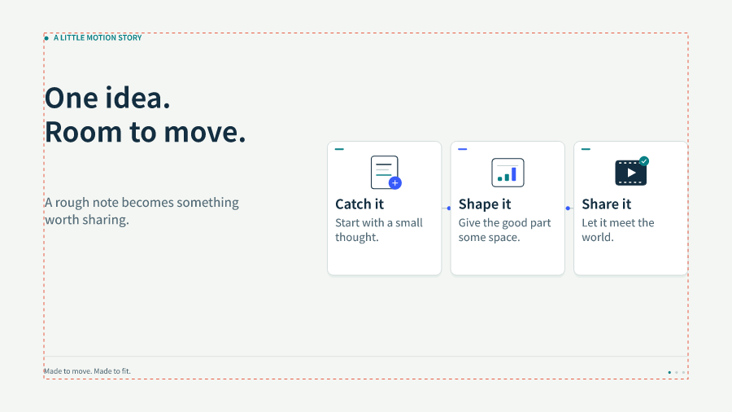
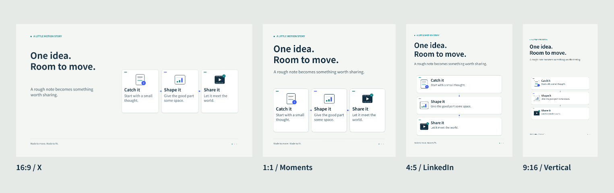

MOTION STORY / OPEN SOURCE
同一个想法，
换个画幅，接着讲。
v0.3：看完整 24 秒短片的三种原生画幅。从独立图层重新编排，附原插画、字体和 React/Remotion 源码。
这里是实际导出的 8 秒 GIF／MP4。切换画幅，看标题、卡片和连线如何重新安排。点播放才会动，也可以只看静态封面。



这是文件预览。安全区是制作建议；平台播放器、封面缩略图和按钮覆盖仍需在实际设备确认。朋友圈 1:1 是保守建议，并非已核实的官方规格。
新：把已有的动效接着用
九个个人介绍场景已经拆成组件。下面两份各 12 秒：一份重新组合旧组件，一份独立实现三种公开动效思路。查看全部 12 个组件。


错峰网格、路径追踪、滚动字带。
MP4 · GIF · Anime.js 参考 · Motion 参考

还有两种讲法


摆在一起看
